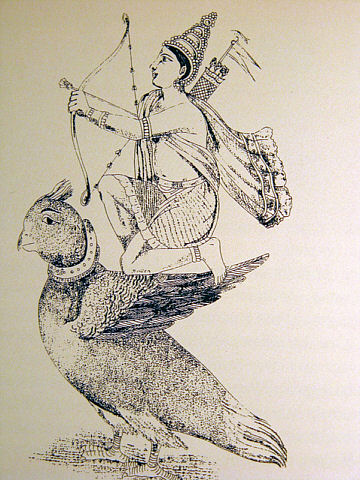

mailto:payer@payer.de
Zitierweise | cite as:
Payer, Alois <1944 - >: Sanskritkurs. -- 22. Lektion 22. -- Fassung vom 2008-12-12. -- URL: http://www.payer.de/sanskritkurs/lektion22.htm
Erstmals hier publiziert: 2008-12-12
Überarbeitungen:
Anlass: Lehrveranstaltungen 1980 - 1984
©opyright: Dieser Text steht der Allgemeinheit zur Verfügung. Eine Verwertung in Publikationen, die über übliche Zitate hinausgeht, bedarf der ausdrücklichen Genehmigung des Verfassers
Dieser Text ist Teil der Abteilung Sanskrit von Tüpfli's Global Village Library
Falls Sie die diakritischen Zeichen nicht dargestellt bekommen, installieren Sie eine Schrift mit Diakritika wie z.B. Tahoma.
Die Devanāgarī-Zeichen sind in Unicode kodiert. Sie benötigen also eine Unicode-Devanāgarī-Schrift.
Will man in Sanskrit ausdrücken, dass
eine Handlung des Agens (कर्तृ) einer anderen Handlung des Agens
vorausgeht oder mit ihr als begleitender Umstand einhergeht,
verwendet man das Absolutivum (क्त्वा । ल्यप्). Also
Das Absolutivum ist ein Verbal-Adverb, d.h. es ist weder konjugierbar noch deklinierbar, es hat aber immer - von wenigen Ausnahmen abgesehen - denselben Agens (कर्तृ) wie die Handlung, der die durch das Absolutiv bezeichnete Handlung vorausgeht bzw. die es begleitet. Der Agens des Absolutiv staht also im Nominativ (प्रथमा) oder Instrumentalis (तृतीया). Neben den Komposita ist das Absolutiv eines der häufigsten Ausdrucksmittel im Sanskrit. Bei der Übersetzung ins Deutsche vermeide man, ständig "nachdem" zu sagen. man verwende statt dessen die im Deutschen gebräuchlichen Ausdrucksweisen für zeitliche Anreihung. Schema: (nähere Bestimmung zum Absolutiv: Umstandsbestimmung, Objekt u.sw.) - Absolutiv - Absolutiv - ... - Absolutiv - ... Agens + Verbalsatz (im Aktiv oder Passiv) |
Beispiele:
गृहं प्रविश्य बालां दृष्ट्वा नरो वदति = Passivkonstruktion: गृहं प्रविश्य बालां दृष्ट्वा नरेणोद्यते = "Der Mann betritt das Haus, sieht das kleine Mädchen und spricht es an."
Plural: गृहं प्रविश्य बालां दृष्ट्वा नरा वदन्ति ।
|
| Bildung: (meist) tiefstufige Wurzel in der Gestalt, die sie vor dem PPP hat + -tvā (-त्वा) Nur das verneinende a- / an- verträgt sich mit dem Suffix -त्वा : अकृत्वा "ohne getan zu haben" |
Beispiele:
आप्त्वा "nachdem er / sie / es / ich / du / wir / ihr / sie / wir beide / ihr beide / sie beide erreicht hat / hatte / haben / hatten"
आसित्वा "nachdem er (...) gesessen war / ist"
इत्वा "nachdem er (...) gegangen war / ist"
स्थित्वा "nachdem er (...) gestanden war / ist"
जित्वा "nachdem er (...) gesiegt hat / hatte"
उक्त्वा "nachdem er (...) gesprochen hat / hatte"
| (meist) tiefstufige Wurzel + -ya |
Beispiele:
उपनीय "nachdem er (...) herangeführt hat / hatte"
प्रभूय "nachdem er (...) herausgeragt ist / war" "nachdem er (...) Macht hatte"
प्राप्य "nachdem er (...) erlangt hat / hatte"
| unverändert hochstufige Wurzel + -ya |
Beispiel:
उपस्थाय "nachdem er (...) hingetreten war / ist" ; (aber ohne Präverb: स्थित्वा)
| tiefstufige Wurzel + -tya |
Beispiele:
प्रस्तुत्य "nachdem er (...) laut gepriesen hat / hatte"
विस्मृत्य "nachdem er (...) vergessen hat / hatte"
संस्कृत्य "nachdem er (...) fürs Opfer zubereitet hat / hatte"
| Optionell: Wurzel auf -am / -an + -ya oder: Wurzel auf -a + tya |
Beispiel:
विगम्य oder विगत्य "nachdem er (...) vergangen ist / war"
काम m.: Wunsch, Begehren ; erwünschte Gabe, Sinnenlust, Liebe, Liebesgott
कामम् Akk. adverbiell: nach Wunsch, nach Herzenslust

Abb.: कामदेवः , 19. Jhdt
[Bildquelle: Wikipedia, Public domain]
शक् 5 P शक्नोति Pass.शक्यते PPP शक्त Inf. शक्तुम् : fähig sein, können
davon:
शक्ति f.: das Können, Vermögen, Fähigkeit, Kraft ; auch: göttliche Kraft, personifiziert als weibliche Begleiterin insbes. von शिव
शक्र m.: der Mächtige (Beiname von इन्द्र)
Abb.: दुर्गाशक्तिः = दुर्गैव शक्तिः
Kolkatta = কলকাতা
[Bildquelle: The Eternity. --
http://www.flickr.com/photos/the_world_in_my_eyes/2914301330/. -- Zugriff am
2008-12-12. --


 Creative
Commons Lizenz (Namensnennung, keine kommerzielle Nutzung, keine Bearbeitung)]
Creative
Commons Lizenz (Namensnennung, keine kommerzielle Nutzung, keine Bearbeitung)]
अर्ह 1 P अर्हति Pss. अर्ह्यते PPP अर्हित Inf. अर्हितुम् : etwas verdienen (zu etwas würdig sein), dürfen, verpflichtet sein zu, sollen (in der 2. Person wird अर्ह् + Infinitiv oft als milder Befehl verwendest: "Du solltest")
अर्हन्त् 3 Part. Präs. P: ein Würdiger. Im Buddhismus und Jainismus: jemand, der die endgültige Erlösung erreicht hat
व्रत n.: Gelübde, religiöse Pflicht, religiöse Observanz (man verspricht der Gottheit etwas, um etwas von ihr zu bekommen. Beispiel: eine Mutter verspricht, ihre Tochter als Tempelprostituierte (देवदासी) hinzugeben, wenn ihre Tochter wieder gesund wird. Wichtige व्रत heute: Fasten ; Enthaltsamkeit von Speisen, die man liebt ; sexuelle Enthaltsamkeit ; Lesen heiliger Schriften ; Vollzug bestimmter Riten ; Speisung von Brahmanen u. ä. Kurz zu den व्रत : Walker, Hindu World Bd. II, S. 581f. Ausführlich: P. V. Kane: History of Dharmaśāstra Bd. 5,1 S. 1 - 462. Dort S. 253 - 462 Liste von व्रत und religiösen Festen ("the following list ... does not calim to be thoroughly exhaustive" !!!)
चर् 1 P चरति Pass. चर्यते PPP चरित Inf. चरितुम् : weiden, umhergehen, sich regen, sich bewegen, handeln, etwas ausüben, vollziehen (z.B. व्रतं चर् : ein Gelübde praktizieren, insbes. sexuelle Enthaltsamkeit)
davon:
चर ३: beweglich ; n.: das Bewegliche = Tiere (im Unterschied zu den Pflanzen)
चरण n.,m.: Fuß
चरित n.: Lebenswandel, Lebenstaten
ब्रह्मचर्य n.: Vollzug des Veda (ब्रह्मन्) = Studium des Veda im ersten Lebensstadium (dem des ब्रह्मचारिन्), welches strenge sexuelle Enthaltsamkeit erfordert ; deshalb auch: sexuelle Enthaltsamkeit, zölibatärer Lebenswandel
Abb.: धेनवश्चरन्ति
Goa = गोंय
[Bildquelle: Veebl. --
http://www.flickr.com/photos/veebl/2322214162/. -- Zugriff am 2008-12-12. --


 Creative
Commons Lizenz (Namensnennung, keine kommerzielle Nutzung, keine Bearbeitung)]
Creative
Commons Lizenz (Namensnennung, keine kommerzielle Nutzung, keine Bearbeitung)]
A) Bilden und übersetzen Sie das Absolutiv zu folgenden Verben:
B) Übersetzen Sie und lösen Sie die Komposita in Sanskrit auf:
अन्नं पक्त्वा ब्राह्मणदास्यत्ति ॥१॥
इष्टदेवतापूजां कृत्वेन्द्रादिदेवान्सद्ब्राह्मणाः स्तुवन्ति ॥२॥
प्रस्थाय रामः सपुत्रः सद्गुरुश्रवार्थेन ब्राह्मणग्रामं गच्छति ॥३॥
अनिष्ट्वा नरो भगवद्भक्तिमात्रेणापि मोक्षमाप्नोति ॥४॥
गृहगर्भं प्रविश्य ब्राह्मणपुत्रमुपस्थाय क्षत्रियशूरो वक्ति ॥५॥
सम्बुध्य दुःखाद्यार्यसत्यानि प्रोच्य सुगतो मोक्षमार्गेण नरान्नयति ॥६॥
मन्त्रं विस्मृत्य यजन्यज्ञदोषं करोति ॥७॥
धनं प्राप्य बुद्धमार्गभिक्षवो दुष्यन्ति ॥८॥
अनार्यशत्रुभिः संगत्य नरसिंहा विजयन्ते ॥९॥
पुण्यं कृत्वा सत्यमेवोदित्वा नरो नरकं नोपपद्यते ॥१०॥
C) Machen Sie aus obigen Sätzen (außer Sätze 8 und 10) Passivkonstruktionen
Abb.: अन्नं पक्त्वा ...
[Bildquelle: Curt Carnemark / World Bank. --
http://www.flickr.com/photos/worldbank/2183558378/. -- Zugriff am
2008-12-12. --


 Creative
Commons Lizenz (Namensnennung, keine kommerzielle Nutzung, keine Bearbeitung)]
Creative
Commons Lizenz (Namensnennung, keine kommerzielle Nutzung, keine Bearbeitung)]
Zu Lektion 23